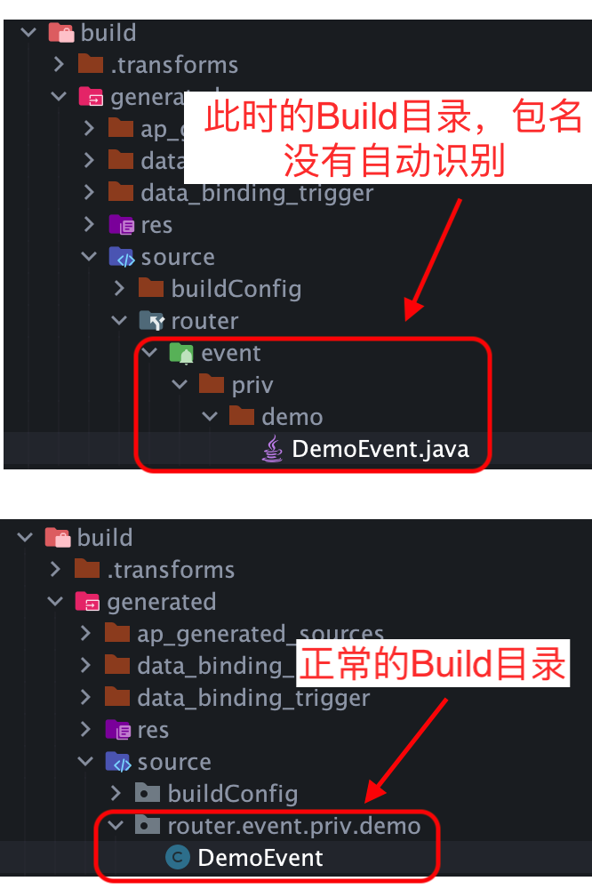

Android-APT APT (Annotation Processing Tool) 发生在 Javac 编译成 Class 文件之后、Class 编码成 Dex 之前。Processor 处理的输入数据是 Javac 编译后的 Class 信息，因此 APT 的执行流程在 Javac 之后，对于 Android 开发中多 Module 的场景，由于每一个 Module 都是并行编译的，只有在产生依赖关系时才会具有先后顺序，因此只要 Module 在 Gradle 中声明了 annotationProcessor，则每个声明了的 Module 都会独立在 Javac 之后调用对应的 Processor 进行处理。因此 Processor 的代码可能会被调用多次，而且每一次调用时的环境都是独立、互不影响的。
1. 自定义APT 创建自定义的 Annotation Processor 有一个前提：Processor 所在的 Module 必须是纯 Java / Kotlin Library ，在 Android Library 中是无法导入 Processor 包的。
参考常见的用了 APT 的依赖库例如 ARouter、ButterKnife 等，通常都分为 3 个 Module：
定义注解的 Annotation Module
处理注解的 Processor Module
提供功能的 API Module
其中由于 Processor Module 只能是一个纯 Java / Kotlin Library，而 Processor 中一定需要依赖具体的注解类，并且 Java / Kotlin Library 只能添加 Java / Kotlin Library 的依赖，所以 Annotation Module 也必须是 纯 Java / Kotlin Library 。
为了简化，假设创建一个纯 Java Library module_processor，同时作为 Annotation Module 和 Processor Module。
1.1 自定义注解 1 2 3 4 5 6 7 8 9 @Documented @Inherited @Retention(RetentionPolicy.RUNTIME) @Target(ElementType.TYPE) public @interface DemoAnnotation { int value () default 0 }
1.2 创建Processor 1 2 3 4 5 6 7 8 9 10 11 12 13 14 15 16 17 18 19 20 21 22 23 24 25 26 27 28 29 30 31 32 33 34 35 36 37 38 39 40 41 42 43 44 45 46 47 48 49 50 51 52 53 public class DemoProcessor extends AbstractProcessor private Filer filer; private Messager messager; private Elements elements; @Override public synchronized void init (ProcessingEnvironment processingEnvironment) super .init(processingEnvironment); filer = processingEnvironment.getFiler(); messager = processingEnvironment.getMessager(); elements = processingEnvironment.getElementUtils(); } @Override public SourceVersion getSupportedSourceVersion () return SourceVersion.latestSupported(); } @Override public Set<String> getSupportedOptions () return super .getSupportedOptions(); } @Override public Set<String> getSupportedAnnotationTypes () return Colletions.singleton(DemoAnnotation.class.getCanonicalName()); } @Override public boolean process (Set<? extends TypeElement> set, RoundEnvironment roundEnvironment) return false ; } }
1.3 注册Processor 在 Android 中使用自定义注解，有两种注册 Processor 的方式：
AutoService 自动注册
META-INF 中手动注册
1.3.1 AutoService自动注册 借助 Google 推出的 AutoService 工具自动完成 Processor 的注册：
1 2 3 4 5 6 7 8 9 implementation 'com.google.auto.service:auto-service:1.0' annotationProcessor 'com.google.auto.service:auto-service:1.0' @AutoService(Processor.class) public class DemoProcessor extends AbstractProcessor ...... }
实际上就是用 @AutoService 的 Processor 动态创建了 DemoProcessor 的注册信息完成注册的。
通过 META-INF 手动注册，与 Java 中的注册方式是一样的：
（1）在 Processor 所在 Module 下创建注册信息文件：
1 2 3 4 5 6 7 8 9 10 11 module_processor/src/main/resources/META-INF/services/javax.annotation.processing.Processor // 该文件目录结构如下： module_processor └- src └- main └- java └- resources └- META-INF └- services └- javax.annotation.processing.Processor
（2）在 javax.annotation.processing.Processor 中声明 Processor 的全路径，例如：
重新 Build 即可发现 DemoProcessor 已经可以正确处理。
1.4 使用Processor 当一个 Processor 成功被注册后，默认情况下只会处理 Processor 所在 Module 的注解，如果其他 Module 也需要使用该 Processor，则需要在 Gradle 中声明：
1 2 annotationProcessor project(path: ':module_processor' )
2. Processor开启增量编译 通过上述方式成功注册一个 Processor 后，在 Build 时 Gradle 可能会报如下警告：
1 2 The following annotation processors are not incremental: jetified-module_processor.jar (project :module_processor). Make sure all annotation processors are incremental to improve your build speed.
大致含义为 Processor 每次都是全量编译的，尽可能确保采用增量编译以提高编译速度。
查阅相关资料后发现，增量编译选项需要在 Processor 的注册信息中指定，对于上文中的两种注册方式：
如果使用 AutoService 自动注册，Auto-Service 在 1.0-rc6 版本中才支持增量编译。
如果使用手动注册，则需要从 Java 原生模式注册信息修改为 Gradle 注册信息。
2.1 AutoService开启增量编译 将 AutoService 的依赖以及对应的 annotationProcessor 升级到 1.0-rc6 或以上即可。
2.2 手动注册开启增量编译 手动注册的 Processor 要开启增量编译，则需要切换为 Gradle 模式的注册信息。
（1）在 Processor 所在 Module 创建 Gradle 模式的注册信息文件：
1 2 3 4 5 6 7 8 9 10 11 12 13 module_processor/src/main/resources/META-INF/gradle/incremental.annotation.processors // Java 原生模式和 Gradle 模式的注册信息文件结构对比： module_processor └- src └- main └- java └- resources └- META-INF └- gradle └- incremental.annotation.processors (Gradle 模式注册信息文件) └- services └- javax.annotation.processing.Processor (Java 原生模式注册信息文件)
两种模式的注册信息文件可以共存，Gradle 编译时会优先选择 Gradle 模式的注册信息。
（2）在 incremental.annotation.processors 中声明支持增量编译的注册信息：
1 priv.demo.DemoProcessor,isolating
重新 Build，Gradle 相关警告日志已经消除。
此外，Gradle 模式注册信息还支持在 Processor 代码中决定编译类型，只需要在 incremental.annotation.processors 中的注册信息声明为 dynamic 类型，然后在 Processor#getSupportedOptions(...) 中指定具体的编译类型即可：
1 2 3 4 5 6 7 8 9 10 11 12 priv.demo.DemoProcessor,dynamic public class DemoProcessor extends AbstractProcessor @Override public Set<String> getSupportedOptions () return Collections.singleton("org.gradle.annotation.processing.aggregating" ); } ...... }
3. APT生成类 成功注册一个 Processor 后，就能通过对应的注解获取相关信息，并根据这些信息动态生成类。生成类文件时，可以通过 JavaPoet 等工具生成，也可以自行拼接代码文本 String 内容后直接写入文件。
3.1 在同一个Module中生成类 以 JavaPoet 为例，获取所有添加了 @DemoAnnotation 注解的类，并在与之相同的 Module 的 Build 目录下生成一个 XXX_YYY 类，其中 XXX 为原始类名，YYY 为该类添加注解时为参数 value 赋的值：
例如：
@DemoAnnotation class A {} 将生成 class A0 {}@DemoAnnotation(2) class B {} 将生成 class B2 {}
使用 JavaPoet 需要添加依赖：implementation 'com.squareup:javapoet:1.13.0'
1 2 3 4 5 6 7 8 9 10 11 12 13 14 15 16 17 18 19 20 21 22 23 24 25 26 27 28 29 30 31 32 33 34 35 36 37 38 39 40 41 42 43 44 45 46 47 48 49 50 51 52 53 54 55 56 57 58 59 60 61 62 63 64 public class DemoProcessor extends BaseRouterProcessor private Filer filer; private Messager messager; @Override public synchronized void init (ProcessingEnvironment processingEnvironment) super .init(processingEnvironment); filer = processingEnvironment.getFiler(); messager = processingEnvironment.getMessager(); } @Override public SourceVersion getSupportedSourceVersion () return SourceVersion.latestSupported(); } @Override public Set<String> getSupportedOptions () return Collections.singleton("org.gradle.annotation.processing.aggregating" ); } @Override public Set<String> getSupportedAnnotationTypes () return new Collections.singleton(DemoAnnotation.class.getCanonicalName()); } @Override public boolean process (Set<? extends TypeElement> set, RoundEnvironment roundEnvironment) if (roundEnvironment != null && roundEnvironment.processingOver()) { System.out.println("Processing the last one in this module." ); } if (set == null || set.isEmpty() || roundEnvironment == null ) { return false ; } for (Element annotatedElement : roundEnvironment.getElementsAnnotatedWith(DemoAnnotation.class)) { if (annotatedElement == null || annotatedElement.getKind() != ElementKind.CLASS) { throw new RuntimeException("Must be annotated on a Class." ); } final String packageName = classElement.getEnclosingElement().toString(); final String className = classElement.getSimpleName().toString(); final int value = classElement.getAnnotation(DemoAnnotation.class).value(); try { JavaFile.builder(packageName, TypeSpec.classBuilder(className + "_" + value) .addModifiers(Modifier.PUBLIC, Modifier.FINAL) .addJavadoc("DO NOT edit this file !!!" ) .build()) .build() .writeTo(filer); messager.printMessage(Kind.NOTE, "Generated: " + packageName + "." + className); } catch (Exception e) { messager.printMessage(Kind.ERROR, "Failed: " + packageName + "." + className); throw new RuntimeException(e); } } return true ; } }
其中在 Processor#process(...) 中，通过 JavaPoet 生成类的最后一步，调用的是 writeTo(filer)，而 filer 是在 Processor#init(...) 中通过运行环境获取的，可以理解为：每一个 Module 在 Javac 之后，Processor 都会被当前 Module 调用，因此 Filer 中的信息都是针对当前 Module 的，所以 writeTo(filer) 将会在当前 Module 下生成文件。
3.2 在任意目录生成类 通过查看 JavaPoet 和 Filer 的源码可以知道，writeTo(filer) 实际上也是通过 Filer 获取了当前 Module 的路径信息，只不过该路径信息是相对当前 Module 的，但实际上 JavaPoet 的 writeTo(...) 是允许直接指定任意路径的，只需要传入对应路径的 Path 对象即可：
1 2 3 4 5 6 File generatedFile = new File("/DemoProject/" + className + ".java" ); JavaFile.builder(packageName, TypeSpec.classBuilder(className) .build()) .build() .writeTo(generatedFile.toPath());
4. APT的局限性 在设计一个组件化解耦的 App 架构时，通常会有一个公共的 BaseModule 存放 Service 或 Event 等类，每个 Module 都依赖这个 BaseModule，借助 BaseModule 与其他 Module 通信，这样不同 Module 之间就能脱耦合。但这样的设计方式就会导致两个开发上的痒点：
业务 Module 如果需要对外提供功能，为了解耦则必须把 Service 或 Event 放在 BaseModule 中。
业务 Module 的逻辑如果迁移到其他 Module、或者复用到其他项目，由于 Service 或 Event 不放在一起，代码迁移上会带来一定的麻烦，需要手动再从 BaseModule 中迁移一次。
通过上文分析，APT 可以在编译阶段获取项目中使用了特定注解的类、方法、变量等元素以及对应的信息，因此可以动态生成一些类。根据这个特性我想到：是否可以给 Router 框架中的 Service 或 Event 等所有 Module 共享的类加上 @Routing，然后在 Processor 中获取这些类的路径并统一拷贝到 BaseModule 下，并且保持这些拷贝类的类名、包名等信息一致，这样就能解决上述的两个痒点：
每个 Module 对外提供功能的 Service 和 Event 都可以闭环在本 Module 下，开发人员无需关注究竟要把公共逻辑写在哪，而且拷贝的类具有同样的包名、类名等，不会导致多个重名类的问题（包名类名均相同时 Javac 也会抛出异常）。
代码迁移或复用时，整个 Module 迁移即可，不需要到处寻找其他 Module 中依赖的代码。
为此下文中我将分享尝试着用 APT 解决这个问题的思路，但很遗憾，单纯使用 APT 无法完成这个目标。
为了简化问题，以解决 Event 依赖关系为例，主要目的是：如何让写在每个 Module 中的 Event 类被自动复制到 BaseModule 下 。
由于需要处理的 Element 都是在 process(…) 中遍历得到的，因此需要根据实际情况对 Element 做过滤；例如本例中 @Routing 仅允许注解类，因此就需要在遍历 Element 时对每一个 Element 的合法性、Element 注解的位置等做校验，然后再进行后续处理；因此下文省略了这些逻辑处理代码，重点在于如何处理每一个 Element。
4.1 如何获取注解类源文件 首先，为了将 Module 中的 Event 复制到 BaseModule 下，就需要获取到 Event 源文件所在的路径，好在通过 Element 可以获取到：
1 2 3 4 private void generate (Element classElement) String eventSourceFileName = ((ClassSymbol) classElement).sourcefile.getName(); final File eventSourceFile = new File(eventSourceFileName); }
4.2 如何获取目标拷贝目录 在本例中，想要复制到目标的目录位于 BaseModule，由于这些类是源文件的拷贝，因此希望开发人员只会改动源文件而不是拷贝的文件，因此拷贝的文件就应该位于 Build 目录下，这样每一次 Clean 都会自动删除、Rebuild 时可以重新生成，避免不小心改动了拷贝的文件导致无效的问题。
因此，如何获取 BaseModule 的 Build 目录、以及如何将 Event 的拷贝放在正确的路径下就是核心问题。而 Gradle 是支持获取一个 Android-Library 的 Build 目录的：
1 def buildPath = "${project.buildDir.absolutePath}"
但是问题在于，在 BaseModule 的 Gradle 中获取到的 buildPath，怎么在 module_processor 的 Java 代码中获取到呢？
4.2.1 通过BuildConfig 在 Java 代码中获取 Gradle 中的变量，大部分情况下都会考虑借助 BuildConfig 添加变量的方式实现，因此我也首先考虑了能否将 BaseModule 的 Build 目录写入 BuildConfig 中，然后 module_processor 依赖该 Module 并获取其 BuildConfig 中的路径。但在本例场景下：
BaseModule 作为公共 Module 一定会包括 Android 相关特性，所以 BaseModule 一定只能是 Android-Livrary
而 module_processor 作为 AnnotationProcessor 是一个纯 Java-Library，因此不能依赖 BaeModule
这就导致 module_processor 无法通过依赖的方式获取 BaseModule 的信息。
4.2.2 通过环境变量指定 既然无法通过依赖的方式获取，那就需要考虑哪种方式是具有全局性的，第一直觉：环境变量。
利用环境变量设置共享信息在 Android 开发中非常常见，例如 Keystore 的密钥、存储位置；多渠道打包时的 AppKey、组件化构建时的构建模式等等，尤其在有云端构建机的时候，环境变量使用的更为频繁。
环境变量中的数据通常是一些固定的常量，使用环境变量设置全局信息的优点很明显：
数据获取与代码无关，只需要设置在每个设备的本地即可，即便代码泄漏也不会泄漏环境变量中的敏感数据。
数据修改与代码无关，只需要修改环境变量，则构建时会自动获取到新的环境变量，而不需要修改代码。
但在本例中，BaseModule 的路径并不需要用到上述特性，而且由于不同设备、不同开发人员在保存项目时使用的路径都是不一样的，所以用环境变量来指定 BaseModule 的路径还会导致每一个运行该项目的设备都需要独立设置一次 BaseModule 在本机的路径，而且一旦项目路径修改了就需要重新修改环境变量，因此通过环境变量指定 BaseModule 的路径是可行、但并不合适的。
4.2.3 通过SystemProperty指定 Java 对于全局属性的获取方式，除了环境变量以外还有一种常用的：SystemProperty。SystemProperty 具有几大特性：
与 JVM 运行时有关，每一次启动 JVM 都会重新初始化 SystemProperty。
更新时效性高，在同一个 JVM 实例中，只要设置了 SystemProperty，随后就能立即获取到。
与之相比，环境变量在大多数情况下需要重启 JVM 才能刷新。
与环境变量具有同样的全局可见性。
在某些场景下，由于 SystemProperty 与 JVM 实例相关，所以无法保存一些永久化的数据，会被视作 SystemProperty 的一个缺点；但在本例中，BaseModule 的路径在任何一次构建时都有可能发生改变，所以恰好需要用到 SystemProperty 这种与 JVM 实例相关的特点，因此本例最终就采用了 SystemProperty 来存储和获取 BaseModule 的 Build 目录路径：
1 2 3 4 5 System.setProperty("build_dir_path" , "${project.projectDir.absolutePath}" ) final String buildDirPath = System.getProperty("build_dir_path" );
4.3 如何拷贝到目标目录 通过上述方式，Processor 已经可以获取到 BaseModule 的 Build 目录了，接下来就是将 Event 源文件拷贝至目标目录下。这里需要思考一个问题：Java 中的类都会在某一个 Package 下，而 Package 是具有实际目录路径的，例如 priv.demo.DemoEvent 在文件系统中会对应 priv/demo/DemoEvent 这样的目录，因此将 Event 源文件拷贝到 BaseModule 的 Build 目录下时，还需要创建这样的 Package 路径：
1 2 3 4 5 6 7 8 9 10 11 12 13 14 15 16 17 18 19 20 21 22 23 24 25 26 27 28 29 30 31 32 33 34 35 36 37 38 39 40 41 42 43 44 45 46 47 48 49 private void generate (Element classElement) String buildDirPath = System.getProperty("build_dir_path" ); if (!new File(buildDirPath).exists()) { throw new RuntimeException("Invalid build directory." ); } buildDirPath += File.separator + "generated" + File.separator + "source" + File.separator + "router" + File.separator + "event" ; final String packageName = classElement.getEnclosingElement().toString(); final String className = classElement.getSimpleName().toString(); final String srcEventFileName = ((ClassSymbol) classElement).sourcefile.getName(); final File srcEventFile = new File(srcEventFileName); if (!srcEventFile.exists()) { return ; } final String packageDir = packageName.replace('.' , File.separatorChar); final String targetClassPath = buildDirPath + File.separator + packageDir + File.separator + className + ".java" ; final File targetEventFile = new File(targetClassPath); if (!targetEventFile.exists()) { if (!targetEventFile.mkdirs()) { throw new RuntimeException("Failed to create directory for copying." ); } } try { Files.copy(srcEventFile.toPath(), targetEventFile.toPath(), StandardCopyOption.REPLACE_EXISTING); } catch (IOException e) { throw new RuntimeException(e); } }
随便在某个 Module 中创建一个 DemoEvent 类并添加 @Routing 注解，假设位于 app/priv/demo/DemoEvent.java，Rebuild 项目发现 DemoEvent 确实成功复制到了 BaseModule/build/generated/source/router/priv/demo/DemoEvent.java！
4.4 如何导入生成的类 通过上文的方式已经可以将源文件拷贝至 BaseModule 的 Build 目录中了，但是 这个生成的类无法被任何一个类导入 ，对比观察这个 Build 目录下生成的目录结构和正常的目录结构：

原来是因为默认情况下，Library 在 Gradle 中只有一个源文件目录：
1 2 3 4 5 6 7 8 9 sourceSets { main { jni.srcDirs = [] jniLibs.srcDir ["libs" ] java.srcDirs = ['src/main/java/' ] } }
因此只需要在 BaseModule 的 Gradle 中将生成的类所在目录也添加到 Java 源文件目录中即可：
1 android.sourceSets.main.java.srcDirs += ['build/generated/source/' ]
考虑到 BaseModule 需要在 Gradle 中将自己的 Build 目录添加到 SystemProperty，还需要将生成的文件所在目录添加到 Java 源文件目录，如果未来更换一个保存生成类的 Module 需要迁移的脚本比较多，因此可以考虑封装成一个 Gradle 方法：
1 2 3 4 5 6 7 8 9 10 11 project.ext.asBaseModule = { android.sourceSets.main.java.srcDirs += ['build/generated/source/' ] def buildDirPath = "${project.buildDir.absolutePath}" if (buildDirPath != null && !buildDirPath.trim().isEmpty()) { System.setProperty("build_dir_path" , buildDirPath) } }
这样如果想让某个 Module 作为保存生成类的 Module，只需要在该 Module 的 Gradle 中调用这个方法即可：
1 2 apply from: "${project.rootDir}/base.gradle" project.ext.asBaseModule()
4.5 Javac编译时异常 4.5.1 Javac异常重现 通过上述一系列方法，编译后已经能成功将所有添加了 @Routing 注解的 Event 拷贝至 BaseModule 中，看起来似乎很成功，但假如按照正常流程开发：
在 AppModule 中定义了一个 priv.demo.DemoEvent
编译，在 BaseModule 中生成拷贝的 DemoEvent
在 SubModule 中导入并使用拷贝的 DemoEvent
Clean，再次构建
由于 Clean 时将 BaseModule 的 Build 目录删除了，在第二次编译时 SubModule 的 Javac 任务就会抛出错误：
1 error: package priv.demo does not exist
原因其实也很简单，因为 Javac 发生在 Processor 之前 ，所以 SubModule 在 Javac 的时候 Processor 还没有把 DemoEvent 拷贝到 BaseModule 中，自然会找不到对应 Package 和类。但由于 Gradle 并行任务，实际上在 Javac 抛出异常后，构建还在继续运行，并且会在 Javac 之后成功拷贝 DemoEvent，因此如果 再次构建，又能成功完成 。
4.5.2 尝试延迟执行Javac 为此我的第一想法是：能不能让 BaseModule 的 Javac 任务运行在所有其他 Module 的 Javac 之前？这样是不是就能在其他 Module Javac 之前将所有需要拷贝的 Event 准备好？
带着疑问我查阅了 Gradle 脚本相关资料，最终决定通过 Gradle Task 的 dependsOn 完成。
与 dependsOn 类似的还有 mustRunAfter，相关区别可以自行查阅。
1 2 3 4 5 6 7 8 9 10 11 12 13 14 15 16 17 18 19 20 21 22 23 24 25 26 27 28 29 30 31 32 33 34 35 36 37 38 39 def isJavacTask(Task task) { return (task.name.startsWith("compile" ) && task.name.endsWith("JavaWithJavac" )) } def baseModuleJavacTaskSet = new HashSet<Task>()project(':base_module' ).tasks.all { task -> if (isJavacTask(task)) { baseModuleJavacTaskSet.add(task) } } tasks.whenTaskAdded { task -> if ((task.project == project(':base_module' ))) { return } if (isJavacTask(task)) { for (Task eachBaseModuleJavacTask : baseModuleJavacTaskSet) { task.dependsOn eachBaseModuleJavacTask } } } project.ext.asBaseModule = { android.sourceSets.main.java.srcDirs += ['build/generated/source/' ] def buildDirPath = "${project.buildDir.absolutePath}" if (buildDirPath != null && !buildDirPath.trim().isEmpty()) { System.setProperty("build_dir_path" , buildDirPath) } }
4.5.3 延迟Javac导致重复生成BuildConfig 通过 Gradle 使得其他 Module 执行 Javac 之前都必须先执行 BaseModule 的 Javac。重新 Sync、Rebuild，这次 Javac 抛出了另一个异常：
1 2 3 4 5 6 7 8 9 10 /DemoProject/base_module/build/generated/source /buildConfig/debug/priv/demo/BuildConfig.java:6:error: duplicate class: priv.demo.BuildConfig public final class BuildConfig { ^ 1 error FAILURE: Build failed with an exception. * What went wrong: Execution failed for task ':base_module:compileDebugJavaWithJavac' . > Compilation failed; see the compiler error output for details.
异常提示 BaseModule 下存在重复（包名与类名均相同）的类 BuildConfig，这就奇怪了，上文中所有的改动都没有操作 BuildConfig，为什么会导致 BuildConfig 重复呢？根据日志点进对应的 BuildConfig 类中查看 AndroidStudio 的提示：
1 Duplicate class found in the file '/DemoProject/base_module/build/generated/source/buildConfig/release/priv/demo/BuildConfig.java'
原来是同时生成了 Debug 和 Release 模式下的 BuildConfig 类，由于包名和类名都相同且在同一个 Module 下，所以抛出了该异常。这更让我感到困惑，明明是通过 assembleDebug 任务构建的，为什么会生成 Release 的 BuildConfig 呢？后来通过给 Gradle 中的 baseModuleJavacTaskSet 输出日志发现，原来问题出在：
1 2 3 4 5 6 7 8 9 10 11 12 13 14 15 16 17 18 19 20 21 22 23 24 25 26 27 28 29 30 31 32 def isJavacTask(Task task) { return (task.name.startsWith("compile" ) && task.name.endsWith("JavaWithJavac" )) } def baseModuleJavacTaskSet = new HashSet<Task>()project(':base_module' ).tasks.all { task -> if (isJavacTask(task)) { baseModuleJavacTaskSet.add(task) } } tasks.whenTaskAdded { task -> if ((task.project == project(':base_module' ))) { return } if (isJavacTask(task)) { for (Task eachBaseModuleJavacTask : baseModuleJavacTaskSet) { task.dependsOn eachBaseModuleJavacTask } } }
因此只需要修改判断 Javac 以及 depensOn 的逻辑，区分 Debug 和 Release 即可，优化后的 base.gradle 大致如下：
1 2 3 4 5 6 7 8 9 10 11 12 13 14 15 16 17 18 19 20 21 22 23 24 25 26 27 28 29 30 31 32 33 34 35 36 37 38 39 40 41 42 43 44 45 46 47 48 49 50 def isDebugJavacTask(Task task) { return (isJavacTask(task) && task.name.toLowerCase().contains("debug" )) } def isReleaseJavacTask(Task task) { return (isJavacTask(task) && task.name.toLowerCase().contains("release" )) } def isJavacTask(Task task) { return (task.name.startsWith("compile" ) && task.name.endsWith("JavaWithJavac" )) } def baseModuleDebugJavacTaskSet = new HashSet<Task>()def baseModuleReleaseJavacTaskSet = new HashSet<Task>()project(':base_module' ).tasks.all { task -> if (isDebugJavacTask(task)) { baseModuleDebugJavacTaskSet.add(task) } else if (isReleaseJavacTask(task)) { baseModuleReleaseJavacTaskSet.add(task) } } tasks.whenTaskAdded { task -> if ((task.project == project(':base_module' ))) { return } if (isDebugJavacTask(task)) { for (Task eachBaseModuleDebugJavacTask : baseModuleDebugJavacTaskSet) { task.dependsOn eachBaseModuleDebugJavacTask } } else if (isReleaseJavacTask(task)) { for (Task eachBaseModuleReleaseJavacTask : baseModuleReleaseJavacTaskSet) { task.dependsOn eachBaseModuleReleaseJavacTask } } } project.ext.asBaseModule = { android.sourceSets.main.java.srcDirs += ['build/generated/source/' ] def buildDirPath = "${project.buildDir.absolutePath}" if (buildDirPath != null && !buildDirPath.trim().isEmpty()) { System.setProperty("build_dir_path" , buildDirPath) } }
再次重新构建，不再生成重复的 BuildConfig 类了。
4.5.4 整理优化脚本 将 base.gradle 整理和优化后，大致如下：
1 2 3 4 5 6 7 8 9 10 11 12 13 14 15 16 17 18 19 20 21 22 23 24 25 26 27 28 29 30 31 32 33 34 35 36 37 38 39 40 41 42 43 44 45 46 47 48 49 50 51 52 53 54 55 56 57 58 59 60 61 62 63 64 65 66 67 68 69 70 71 72 73 74 75 76 77 78 79 80 81 82 83 84 def isDebugJavacTask(Task task) { return (isJavacTask(task) && task.name.toLowerCase().contains("debug" )) } def isReleaseJavacTask(Task task) { return (isJavacTask(task) && task.name.toLowerCase().contains("release" )) } def isJavacTask(Task task) { return (task.name.startsWith("compile" ) && task.name.endsWith("JavaWithJavac" )) } def isBuildingCurrentShell() { return gradle.startParameter.currentDir.toString().contains(project.name) } task setModulePath(type: Exec) { def modulePathKey = "module_path_${project.name}" def modulePathValue = "${project.projectDir.absolutePath}" System.setProperty(modulePathKey, modulePathValue) println("[Set Module path property] ${modulePathKey}: ${modulePathValue}" ) } if (isBuildingCurrentShell()) { android.sourceSets.main.java.srcDirs += ['build/generated/source/' ] def shellModulePath = "${project.buildDir.absolutePath}" if (shellModulePath != null && !shellModulePath.trim().isEmpty()) { def shellGeneratedPath = "${shellModulePath}${File.separator}generated" System.setProperty("shell_generated_path" , shellGeneratedPath) println(">>>>> [Set Shell generated path property] >>>>> ${shellGeneratedPath}" ) } } project.ext.asBaseModule = { android.sourceSets.main.java.srcDirs += ['build/generated/source/' ] def baseModulePath = "${project.buildDir.absolutePath}" if (baseModulePath != null && !baseModulePath.trim().isEmpty()) { def baseModuleGeneratedPath = "${baseModulePath}${File.separator}generated" System.setProperty("base_generated_path" , baseModuleGeneratedPath) println(">>>>> [Set BaseModule generated path property] >>>>> ${baseModuleGeneratedPath}" ) } } def baseModuleProject = project(':base_module' )def isTaskFromBaseModule(Task task) { return (task.project == project(':base_module' )) } def baseModuleDebugJavacTaskSet = new HashSet<Task>()def baseModuleReleaseJavacTaskSet = new HashSet<Task>()baseModuleProject.tasks.all { task -> if (isDebugJavacTask(task)) { baseModuleDebugJavacTaskSet.add(task) } else if (isReleaseJavacTask(task)) { baseModuleReleaseJavacTaskSet.add(task) } } tasks.whenTaskAdded { task -> if (isTaskFromBaseModule(task)) { return } if (isDebugJavacTask(task)) { for (Task eachBaseModuleDebugJavacTask : baseModuleDebugJavacTaskSet) { task.dependsOn eachBaseModuleDebugJavacTask } } else if (isReleaseJavacTask(task)) { for (Task eachBaseModuleReleaseJavacTask : baseModuleReleaseJavacTaskSet) { task.dependsOn eachBaseModuleReleaseJavacTask } } }
4.5.5 延迟Javac无法解决问题 经过上文中的一番折腾，最终发现依然没有解决 error: package xxx does not exist 的问题，因为我理解错了 Processor 的 Javac 的关系，实际上正如文首提到的 Processor 的流程：
Processor 发生在 Javac 之后。
每个 Module 都会独立 Javac，并且需要自行声明 annotationProcessor 来触发 Processor 处理本 Module 内的注解。
因此提前执行 BaseModule 的 Javac，只会处理 BaseModule 的注解，其他 Module 中的注解仍然需要在它们 Javac 之后才处理。
因此，想要实现前文提到的目标，最终还是需要采用 APT + Transform 的方式实现了。
参考文献